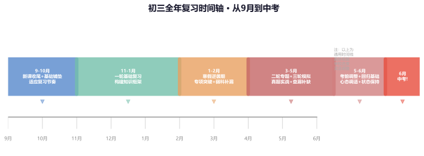
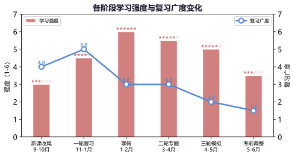
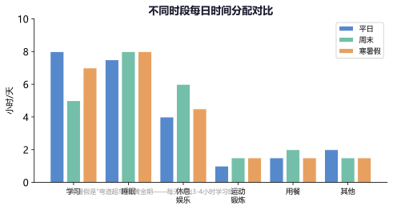
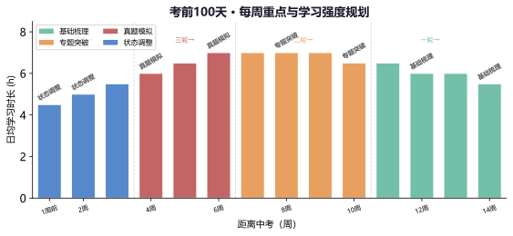
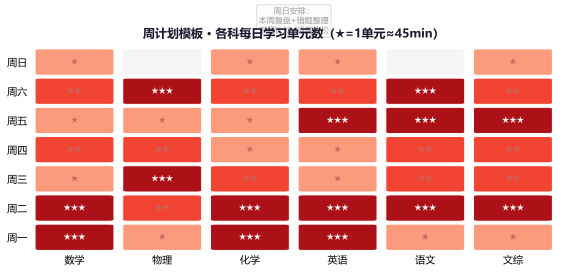
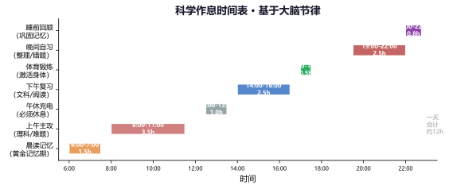
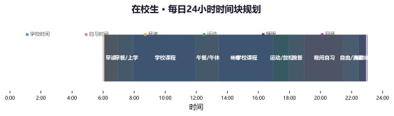
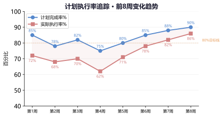
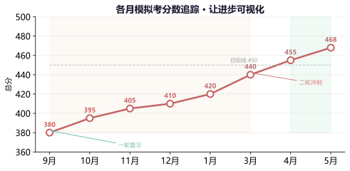
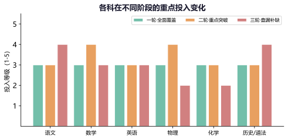

专题一：全年复习时间线
从初三开学到中考
整体时间架构：初三全年约9个月（9月→6月），大致分为五个阶段——新课收尾期（9-10月）、一轮基础复习期（11-1月）、寒假逆袭期（1-2月）、二三轮冲刺期（3-5月）、考前调整期（5-6月）。每个阶段的目标不同、节奏不同、投入方式也不同。下面的时间轴清晰展示了这五个阶段的衔接关系。

初三全年复习时间轴 · 从9月到中考的完整规划
五个阶段的核心任务：
新课收尾期（9-10月）：初三新课要在10月底前基本结束。这段时间的任务是"新课学好+回顾初一初二"。不要因为赶进度而忽略新课的理解——初三新课（如数学的圆、物理的电磁学）在中考中占比较高。
一轮复习期（11-1月）："地毯式"过一遍所有知识点。重点是回归教材，逐章梳理概念、公式、定理，同时做基础题巩固。目标是"不遗漏任何一个考点"。
寒假逆袭期（1-2月）：寒假是唯一可以自主支配的大块时间，是"弯道超车"的黄金期。重点攻克弱科和薄弱板块。
二三轮冲刺期（3-5月）：先专题突破重难点（二轮），再全真模拟训练（三轮）。是提分速度最快的阶段。
考前调整期（5-6月）：减少新题量，回归基础，调整作息和心理状态。
关键提醒：五个阶段不是割裂的三段，而是层层递进的关系。前一个阶段没做好，后一个阶段就要花时间来补。所以——"不要等一轮复习才开始努力，从初三第一天就要进入状态。"
例题1：现在是10月中旬，初三新课还没上完，但身边的同学已经开始一轮复习了，我很焦虑，应该怎么办？
分析：
首先，初三新课在10月底到11月中旬结束都是正常的，不必因为"别人开始复习了"而焦虑。
(1) 当前优先级：新课学习 > 复习。如果新课没学好在复习阶段会"两头空"。
(2) 每周可抽出少量时间（比如周末2小时）回顾初一初二的薄弱内容。
(3) 真正的一轮复习从新课结束后才全面展开，那时候大家站在同一起跑线。
(4) 现在的努力方向：把每节新课学透，减少复习阶段的"补课"负担。
核心：复习不是比谁"开始得早"，而是比谁"效率高"。你现在做好新课的积累，就是为后续复习打基础。
例题2：以下哪个阶段的学习强度应该最大？（ ）
A．9-10月新课收尾期
B．11-1月一轮复习期
C．3-4月二轮专题突破期
D．5-6月考前调整期
解析：
A✗：新课收尾期以学好新课为主，强度适中即可。
B✗：一轮复习虽然重要但周期长，不宜冲刺过度。
C✓：二轮专题突破期（3-4月）是提分速度最快的阶段，需要在有限时间内攻克重难点，强度最高。
D✗：考前调整期应该逐步减负，保持状态为主。
答案：C
练习1：画出你自己的"初三时间轴"——标注出你认为最重要的3个时间节点和你对应的目标。
范例：9月→新课跟上节奏 | 1月→期末考达到XX名次 | 3月→一模达到XX分
练习2：评估你目前处于哪个阶段？这个阶段的核心任务你完成了几项？下一步的行动计划是什么？
自我评估是调整方向的前提。诚实地面对自己才能做出有效的改变。
专题二：阶段性目标与重点
为每个阶段设定明确目标
目标设定的SMART原则：好的目标应该是Specific（具体的）、Measurable（可测量的）、Achievable（可达成的）、Relevant（相关的）、Time-bound（有截止时间的）。"我要好好学习"不是目标，"数学在11月月考达到90分以上"才是目标。
各阶段的目标设定建议：
新课收尾期：目标1——每节新课的课后练习题正确率≥85%；目标2——回顾初一初二弱科，确定2-3个需要优先弥补的板块。
一轮复习期：目标1——完成所有知识点的地毯式复习；目标2——各科基础题正确率提升到90%以上。
寒假逆袭期：目标1——重点突破2个最弱科目，每科提分10-15分；目标2——建立各科知识框架图。
二三轮冲刺期：目标1——完成近5年真题（本省）；目标2——模拟考分数稳步上升。
考前调整期：目标1——保持良好作息；目标2——心态平稳进考场。

各阶段学习强度与复习广度变化——强度最高在二轮，广度从宽到窄
| 阶段 | 时间 | 目标类型 | 具体目标示例 | 检测方式 |
|---|
| 新课收尾 | 9-10月 | 学习质量 | 新课练习正确率≥85% | 课后小测 |
| 一轮复习 | 11-1月 | 覆盖广度 | 过完所有知识点，无盲区 | 章节自测 |
| 寒假逆袭 | 1-2月 | 弱科突破 | 弱科提分10-15分 | 开学摸底 |
| 二轮专题 | 3-4月 | 专题深度 | 攻克5个重难点专题 | 专题测试 |
| 三轮模拟 | 4-5月 | 应试能力 | 模拟考稳定在目标分数±10 | 模拟考 |
| 考前调整 | 5-6月 | 状态保持 | 作息规律、心态平稳 | 自我评估 |
例题1：判断下列目标中哪个最符合SMART原则？请分析每个目标的好坏。
A："本期期末要比期中考试进步"
B："物理期末考到55分以上（满分70），比期中的45分提高10分"
C："这学期要好好学习物理"
D："期末考到全班前10名"
分析：
A✗：不具体——进步多少？没给出具体数值。
B✓：具体的（55分以上）、可测量的（分数可量化）、可达成的（10分提升合理）、相关的（物理）、有时限的（期末）。
C✗：太模糊——"好好学习"无法衡量。
D✗：前10名涉及他人的表现（排名受别人影响），不可控因素太多。应该用"考到XX分"替代"考到XX名"。
答案：B
例题2：一轮复习阶段的目标应该是什么？（ ）
A．把所有压轴题都做会
B．地毯式过完所有知识点，基础题正确率达90%+
C．每周做3套完整模拟卷
D．只复习自己擅长的科目
解析：
A✗：攻克压轴题是二三轮的任务。一轮的重点是"广度"而非"深度"。
B✓：一轮复习的核心就是"全面覆盖、不留盲区"，基础题正确率是检测标准。
C✗：每周3套模拟卷是三轮的任务。一轮可以以章节练习为主。
D✗：只复习优势科目会拉大强弱科差距，中考看的是总分。
答案：B
练习1：用SMART原则为你当前所处的阶段设定3个具体目标，写在一张纸上贴在书桌前。
目标要满足：具体、可测、可行、相关、有时限。每天看到它们提醒自己。
练习2：将你的中考总目标分解到每个阶段——每个阶段需要提多少分、主攻哪科、检测方式是什么。
大目标不分解就永远是空想。每阶段的可视化进步是持续动力的来源。
专题三：寒暑假规划策略
弯道超车的黄金期
寒假为什么重要：寒假约4周时间，是初三唯一一段完全由自己支配的大块时间。往届数据表明：充分利用寒假的学生，开学后的一模成绩平均比假期前高15-25分；而假期完全放松的学生，开学后需要2-3周才能找回状态。寒假不是"用来放松的"，而是"用来拉开差距的"。
寒假规划三原则：
① 节奏不能断——寒假最容易犯的错误是"先玩半个月再说"。建议保持和上学基本一致的作息（可以晚起1小时，但不能睡到中午）。
② 弱科优先——寒假时间有限，不要"面面俱到"。选2个最弱的科目（提分空间最大的），每天固定时间攻克。
③ 要有产出——"学了"和"学会了"是两回事。每周末检查本周的产出（做了多少题、掌握了多少知识点）。

不同时段每日时间分配对比——寒假每天可比平日多出3-4小时学习时间
例题1：寒假4周，物理是你的弱科（40/70），数学中等（95/120），英语较好（110/120）。如何安排寒假时间？
寒假方案：
第一周 物理攻坚：每天物理2h（回归教材+基础题训练），数学1h（保持手感），英语0.5h（背单词）。物理目标是找回基础概念。
第二周 物理+数学：每天物理1.5h（中等难度题），数学1.5h（中档题专项），英语0.5h。
第三周 综合推进：每天物理1h（真题中的物理题），数学1h（弱项模块），英语0.5h，语文0.5h（阅读+古诗文）。
第四周 收尾+预习：物理弱项再过得确认掌握，数学做一套综合卷检验，为开学做准备。
核心：寒假要"集中火力"攻克弱科。物理从40→55（+15分）在春节期间完全可行。
例题2：寒假期间，以下哪种安排最合理？（ ）
A．每天学8小时，年初一也不休息
B．完全放松，开学再努力
C．前两周集中学习，后两周放松
D．保持稳定节奏，除夕和初一适度休息，其他时间规律学习
解析：
A✗：过度紧绷，容易产生逆反心理，而且春节期间强行学习效率很低。
B✗：4周全放松开学需要很久恢复状态，浪费了"弯道超车"的机会。
C✗：后两周放松会导致前两周的成果大打折扣——记忆需要持续巩固。
D✓：除夕和初一适度休息（1-2天），其他时间保持规律学习节奏。既得到了休息，又没有断掉学习状态。
答案：D
练习1：假设今天开始放寒假（4周），请制定一份具体的寒假学习计划表，包括每天各科时间分配和每周目标。
参考例题1的方案，但要根据自己的实际情况调整。
练习2：列出你寒假最想攻克的3个薄弱知识点/板块，并说明为什么选择它们（提分空间大？经常出错？）。
选择标准：提分空间 + 投入时间短 + 对整体影响大。
专题四：考前100天行动计划
百日冲刺详细规划
百日冲刺的阶段划分：考前100天（约14周）是整个备考最关键的时段。这14周可以分为四个子阶段——基础巩固期（第1-4周）、专题突破期（第5-8周）、真题模拟期（第9-11周）、状态调整期（第12-14周）。每个子阶段的重心和学习强度不同。

考前100天 · 每周重点与学习强度规划——基础→专题→模拟→调整
百日冲刺的"三要三不要"：
要做的三件事：①每周定一个小目标（可量化）；②每天复习当天的内容（不积留问题）；③每周日复盘（调整下周计划）。
不要做的三件事：①不要和别人比进度（节奏是自己的）；②不要盲目刷题（每道题要有目的）；③不要熬夜透支（长期看弊远大于利）。
例题1：考前100天，数学还在85分徘徊（满分120），目标105分。这20分应该怎么拿？
百日提分20分方案：
第1-4周 基础加固：排查数学各板块基础，找到"会但不熟"的知识点。每天30分钟做基础题，确保选择和填空题前10道正确率100%。
第5-8周 中档题专项：重点突破中档题（17-24题），按题型分类训练（函数题、几何题、方程题等），每种题型做5-10道同类题形成解题模式。
第9-11周 套卷实战：每周2-3套真题/模拟卷，限时完成。重点练时间分配和做题节奏。分析每套卷子的失分点。
第12-14周 回顾调整：回归错题本和公式，不再做新题。保持手感的同時巩固基础。
85→105的提分逻辑：基础题不丢分（+5分）+中档题提高正确率（+10分）+压轴题前两问拿到分（+5分）。
例题2：百日冲刺期间，每周末应该做什么？（ ）
A．完全休息，不碰学习
B．疯狂补本周没完成的任务
C．复盘本周计划执行情况 + 制定下周计划 + 整理错题
D．做大量新题，追赶上别人进度
解析：
A✗：完全不学习会打破节奏，周一需要重新"热车"。
B✗：偶尔补可以，但每周都补说明计划本身有问题，需要调整计划而非熬夜补。
C✓：复盘→整理错题→调整计划，是最高效的周末利用方式。磨刀不误砍柴工。
D✗：追赶别人进度没有意义。按自己的节奏走，稳扎稳打。
答案：C
练习1：如果你距离中考还有XX天，请按上面的"四个子阶段"制定你自己的百日冲刺计划，标注每个阶段的每周重点任务。
参考本节的阶段表格，结合自己的实际情况调整各阶段的起止时间和重点内容。
练习2：列出你在百日冲刺期间必须遵守的"三要三不要"，写下来贴在显眼位置。
原则不需要多，3条就够。关键是说到做到。
专题五：周计划制定方法
从目标到行动的关键一步
为什么要做周计划：日计划太细（容易被突发事件打乱）、月计划太粗（难以追踪执行），周计划是"颗粒度最合适"的规划单位。一份好的周计划帮你明确本周要做什么、怎么分配时间、如何检查成果。往届高分考生中，超过80%有做周计划的习惯。
周计划三步法：
第一步：确定本周目标——根据月度目标分解到本周（如"本周完成物理力学板块复习"）。目标不超过3个，贪多嚼不烂。
第二步：分配每日任务——按"重要且紧急"→"重要不紧急"→"紧急不重要"的顺序安排。重要任务安排在效率最高的时段。
第三步：预留弹性时间——每项任务后留10-15分钟缓冲，每天留0.5-1小时的"机动时间"处理突发事务。

周计划模板 · 各科每日学习单元数（★=1单元≈45min）
| 时间段 | 周一 | 周二 | 周三 | 周四 | 周五 | 周六 | 周日 |
|---|
| 早读 (20min) | 语文古诗 | 英语单词 | 语文古诗 | 英语单词 | 语文古诗 | 英语单词 | 本周回顾 |
| 晚自习① | 数学 | 物理 | 数学 | 化学 | 数学 | 弱科专项 | 错题整理 |
| 晚自习② | 英语 | 数学 | 物理 | 英语 | 化学 | 语文 | 下周规划 |
| 晚自习③ | 当日复习 | 当日复习 | 当日复习 | 当日复习 | 当日复习 | 本周复盘 | 适度放松 |
例题1：本周你的目标是"完成物理电学板块的复习"，但周一突然被通知周二要化学考试。怎么调整计划？
调整思路：
(1) 不要把周计划看成"铁板一块"，它应该是"弹性框架"。
(2) 周一晚自习：原本安排的内容先暂停，优先准备周二的化学考试。
(3) 周二考完化学后：恢复正常进度。周二晚自习按计划进行物理电学。
(4) 周六补回：如果周一到周五物理没完成，用周六的"弱科专项"时间补上。
(5) 如果还是完不成，那就调整下周的目标（减少下周的任务量），而不是"熬夜赶工"。
核心原则：计划是为你服务的工具，不是束缚你的枷锁。遇到突发情况灵活调整，而不是因为计划被打乱就全盘放弃。
例题2：制定周计划时，以下哪项做法正确？（ ）
A．把每天每个时间段填满，不留空档
B．周末不安排学习，完全休息
C．每天安排当天要学的内容，不提前规划
D．列出3个以内的核心目标，围绕目标安排每日任务
解析：
A✗：不留弹性时间的计划执行率很低——任何意外都会导致计划崩盘。
B✗：周末完全不学打破节奏。周末可以减少但不应归零。
C✗：每天现想学什么容易拖延和随意，缺乏系统性和连续性。
D✓：聚焦3个目标，围绕目标安排任务，是最有效的周计划方式。
答案：D
练习1：本周日晚上，花15分钟制定下一周的周计划：确定3个目标→分配到每天→预留弹性时间。下周同一时间复盘执行情况。
连续坚持4周做周计划，你会发现自己对时间的掌控力明显提升。
练习2：参考上面的周计划模板，设计一份适合你自己的周计划表（根据你的学校作息和个人习惯调整）。
别人的模板只能参考。适合自己的才是最好的——你在什么时间段效率最高？哪些科目需要更多时间？
专题六：每日作息科学安排
基于大脑节律的时间表
大脑的黄金时间：人的大脑在一天中的效率不是恒定的。研究表明：早上6-8点是记忆的黄金期（适合背诵）；上午8-11点是逻辑思维高峰期（适合理科）；下午2-4点是阅读理解的较好时段（适合文科）；晚上7-9点是深度思考的好时间（适合整理和攻克难题）。合理安排不同类型的学习任务到对应的时段，可以事半功倍。

科学作息时间表 · 基于大脑节律——在正确的时间做正确的事
作息安排的三个关键：
① 固定起床和睡觉时间——包括周末。不规律的作息会影响大脑的清醒节律。每天7.5-8小时睡眠是底线。
② 午休必须要有——20-30分钟的午休能显著提升下午的学习效率。超过1小时的午休反而会导致下午昏沉。
③ 每天安排运动时间——30分钟左右的运动能提高大脑供氧量，提升注意力和记忆力。中考体育本身也是一项考试。

在校生 · 每日24小时时间块规划——掌握时间块，做时间的主人
例题1：小张每天学到晚上12点，早上5点半起床，中午不午休。他觉得很累但成绩没有提升。为什么？
分析：
这是一个典型的"用战术勤奋掩盖战略懒惰"的例子。每天只睡5.5小时，严重不足！
睡眠不足的后果：
(1) 记忆巩固受损——白天学的内容在深度睡眠中被整理和巩固，缺少睡眠=白学。
(2) 注意力下降——睡眠不足时大脑前额叶功能下降，导致上课走神、做题粗心。
(3) 免疫力下降——冲刺期生病是大忌。
改进建议：
(1) 立即调整：晚上11点前睡觉，早上6:30起床（保证7-7.5小时睡眠）。
(2) 中午午休30分钟。
(3) 不靠"时间长"而靠"效率高"。早起后立刻进入学习状态，不刷手机。
(4) 观察调整后一周的学习状态变化（通常3-5天就能感受到明显的改善）。
例题2：以下哪个时间段最适合做数学难题？（ ）
A．早上6点刚起床
B．上午9-11点
C．下午1-2点（午饭后）
D．晚上10点后
解析：
A✗：刚起床时大脑还没完全清醒，更适合做记忆类任务（背古诗、背单词）。
B✓：上午9-11点是大脑逻辑思维最活跃的时段，适合做数学、物理等需要深度思考的任务。
C✗：午饭后血液流向消化系统，大脑供血减少，容易犯困。适合做不太费脑的复习任务。
D✗：晚上10点后大脑疲劳累积，效率低。即使熬夜做出来了，第二天也会因为睡眠不足而低效。
答案：B
练习1：记录你过去3天的作息时间（几点睡、几点起、有无午休、各时段的学习内容），然后对照本节内容找出可以优化的地方。
很多同学觉得自己"不睡午觉可以多学点"，但实际上午后效率低下浪费的时间远多于午休时间。
练习2：设计一份你的"理想作息表"——从起床到睡觉，标注每个时段的安排。然后从明天开始执行1周，评估效果。
作息调整需要3-5天适应期。前3天可能会不太习惯，坚持1周后会感受到明显不同。
专题七：计划执行与监控
让计划落地的方法
为什么计划总是完不成：最常见的原因不是"不努力"，而是——①计划本身不合理（每天安排过满，没有留出弹性）；②缺乏追踪机制（做了计划就不管了，没有检查执行情况）；③拖延症（总想着"等会儿再做"，一等就是一天）。发现问题才能解决问题。
提升计划执行率的五个方法：
① 每日清单法——每天早晨列出当天的"三件最重要的事"，优先完成这三件。
② 番茄工作法——以45分钟为一个学习单元（40分钟学习+5分钟休息），每4个单元后休息15分钟。一次只做一件事。
③ 打卡记录法——每完成一项在计划表上打✓。连续打卡的视觉反馈能产生持续动力。
④ 双人监督法——找一个同样在备考的同学互相监督，每天互相报告完成情况。
⑤ 周末复盘法——每周统计计划执行率，分析未完成的原因，调整下周计划。

计划执行率追踪 · 前8周变化趋势——坚持复盘，执行率逐步提升
例题1：你的周计划执行率只有60%，很多任务都没完成，感到很挫败。应该怎么办？
诊断与改进：
(1) 首先，60%的执行率说明你不是"不努力"，而是"计划超出了实际能力"。
(2) 分析未完成的原因：是任务太多（计划问题）？是效率太低（执行问题）？是外部干扰（环境问题）？
(3) 如果是计划问题：下周的任务量减少30%，先保证80%以上的执行率。
(4) 如果是执行问题：用番茄钟强制自己一次只做一件事，减少手机干扰。
(5) 如果是环境问题：和家长沟通创造一个安静的学习环境，或去图书馆/自习室学习。
(6) 不要追求100%的执行率——80%就是优秀的计划。留出20%的弹性空间应对意外。
重要认知：计划不是"做出来看的"，而是"用来执行的"。一个好计划的标准不是"排得多满"，而是"能完成多少"。
例题2：以下哪种方法最能提升计划执行率？（ ）
A．把计划记在脑子里
B．把计划写下来，每天打勾检查
C．每次计划完不成就惩罚自己
D．让别人来监督我，自己不管
解析：
A✗：记在脑里的计划最容易"选择性遗忘"——做不到的时候会假装没这个计划。
B✓：把计划写下来+打勾检查，是最简单有效的执行跟踪方式。视觉反馈产生成就感。
C✗：惩罚短期内有效但长期会产生"逃避心理"。正反馈（打勾的成就感）比负反馈（惩罚）更可持续。
D✗：别人监督可以作为辅助手段，但最终要靠自我管理。走到考场上的只有你自己。
答案：B
练习1：从今天开始，每天早晨花3分钟列"今日三件事"清单，晚上花2分钟检查完成情况。坚持1周。
这三件事应该是你今天必须完成的最重要的任务。优先做完它们，再做其他事。
练习2：统计过去一周各科的时间投入，看看与计划的目标是否一致。如果偏差较大，分析原因并调整。
时间投入≠产出。如果你在某科投入了最多时间但提分效果不明显，可能需要改变复习方法而非增加时间。
专题八：灵活调整策略
计划赶不上变化怎么办
变化的常态：初三一年中，你一定会遇到各种"计划外"的事情——学校临时加考、老师布置额外作业、身体不舒服、家里有事……这些不是意外，而是常态。做计划时就要把"意外"纳入考虑，而不是每次被打乱就重新开始。
灵活调整的四步法：
第一步：判断优先级——新出现的事情重要吗？紧急吗？用"四象限法则"分类（重要紧急→立即做；重要不紧急→安排时间做；紧急不重要→快速处理或委托；不紧急不重要→放弃做）。
第二步：重新分配时间——被打乱后，重新规划剩余时间。优先保证"重要不紧急"的事（如弱科复习、错题整理）。
第三步：降低预期而非放弃——今天完不成全部任务？没关系，把最重要的一两件做完就行。
第四步：调整下阶段计划——如果本周任务确实差了很多，在下周计划中做补偿，而不是"周末熬夜补"。

各月模拟考分数追踪 · 让进步可视化——每一步努力都算数
"最小可行计划"原则：当你状态不好或时间紧张时，可以启动"最小可行计划"——只保留最基本的复习内容（如：每日背诵10分钟+做几道当天学过的练习题+回顾昨天的错题）。即使只完成了最小计划，也比完全不动好得多。保住了"学习连续性"就没掉队。

各科在不同阶段的重点投入变化——因时制宜，动态调整
例题1：周三本来计划复习物理，但老师突然通知周四化学考试，你的物理复习计划要被打乱了。如何处理？
四步调整法：
(1) 判断优先级：化学考试是"重要紧急"（因为就在明天），物理复习是"重要不紧急"。确实需要先处理化学。
(2) 重新分配：周三晚自习优先复习化学，物理挪到周四完成。如果周四也来不及，就压到周六。
(3) 降低预期：物理的复习计划可以缩减——本来打算复习3章，现在复习最重要的1-2章。
(4) 调整下周计划：如果物理本周确实没完成，在下周计划中增加物理的比重。
重要提醒：计划调整不等于放弃计划。灵活应对变化，但不要因为没有按原计划走就"干脆不做了"。
例题2：模拟考成绩突然下滑了30分，原来的复习计划还应该继续吗？
分析：
模拟考成绩波动是正常的，不要太在意单次分数。关键是分析为什么下滑：
(1) 如果是因为某科特别难：全体分数都低，说明这次出题难，不必焦虑。
(2) 如果是因为某科失常：分析是哪类题失分最多，针对性地调整复习方向。
(3) 如果是因为身体/状态原因：先调整作息，不要急着调整复习计划。
(4) 需要调整的是"具体安排"而非"整体方向"——比如某科需要增加专项训练的时间，但不必推翻整个计划。
核心：计划要有"韧性"——允许调整，但不轻易推翻。大的方向（三轮复习框架）保持不变，小的安排（每天做什么）灵活调整。
练习1：回想上次你的计划被打乱的情况，你用四步法重新分析一次——当时如果可以重来，你会怎么处理？
从过去的经历中学习，比遇到问题再想办法更有效。
练习2：设计一个你自己的"最小可行计划"——当你状态极差、只有1小时学习时间时，你会做什么？
提前想好"最低限度"的方案，让你在任何情况下都能保持学习连续性。记住：做一点总比什么都不做好。